This walkthrough shows the scanner flow, temporary authorization, Supervisor pages, Search, Feedback, and prototype boundaries.
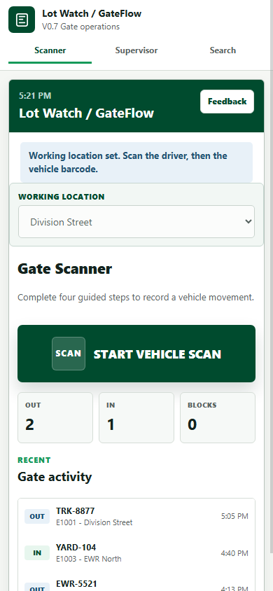
Step 1 of 19
Scanner Home
Start on the phone-sized scanner. The operator confirms the working location and begins a vehicle scan.
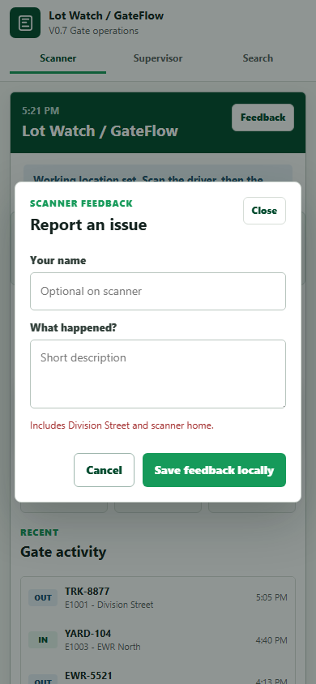
Step 2 of 19
Scanner Feedback
The scanner feedback button records the current location and screen context with a short local note.
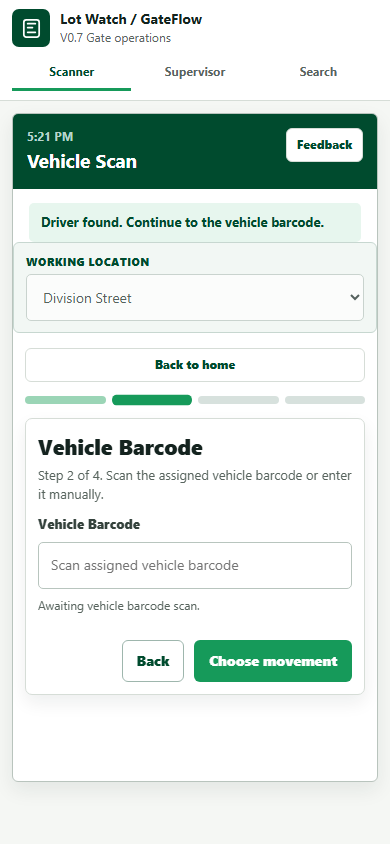
Step 3 of 19
Driver Entry
Driver IDs now use the shorter E number format. E1003 is used here to show the blocked OUT path.
Step 4 of 19
Barcode Recovery
A bad barcode shows a blocking warning. Correcting it to G0003 clears the warning and confirms the vehicle.
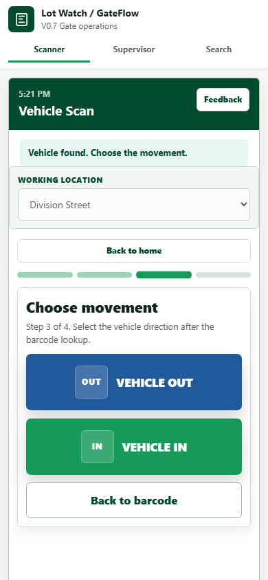
Step 5 of 19
Movement Choice
After the driver and vehicle are found, the operator chooses Vehicle IN or Vehicle OUT.
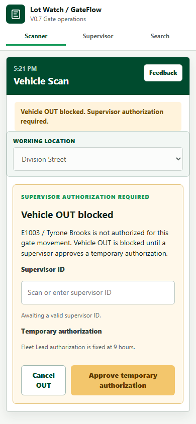
Step 6 of 19
OUT Blocked
Unauthorized Vehicle OUT is blocked and requires supervisor approval before the scan can continue.
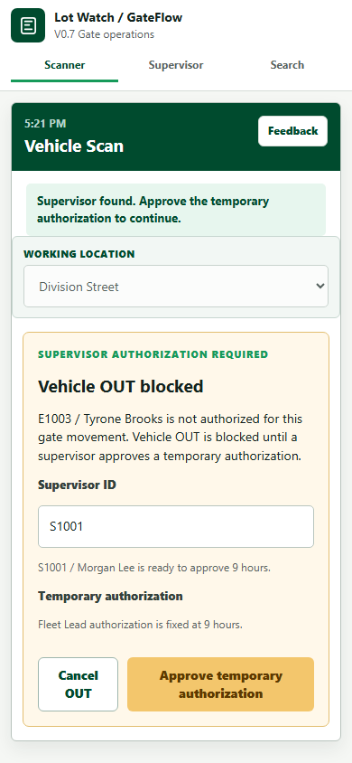
Step 7 of 19
Supervisor Approval
Supervisor S1001 approves the fixed 9-hour temporary authorization. Old SUP-1001 entry is also accepted.
Step 8 of 19
Review OUT
After approval, the scan returns to Review Vehicle OUT with five operational summary lines.
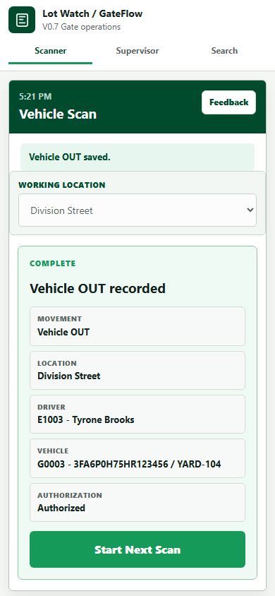
Step 9 of 19
Movement Recorded
Submitting the movement records it locally and returns the operator to the next scan path.
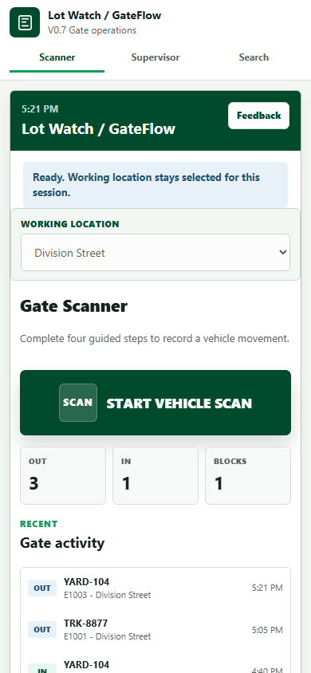
Step 10 of 19
Recent Activity
The scanner home shows current gate counts and recent activity for quick review.
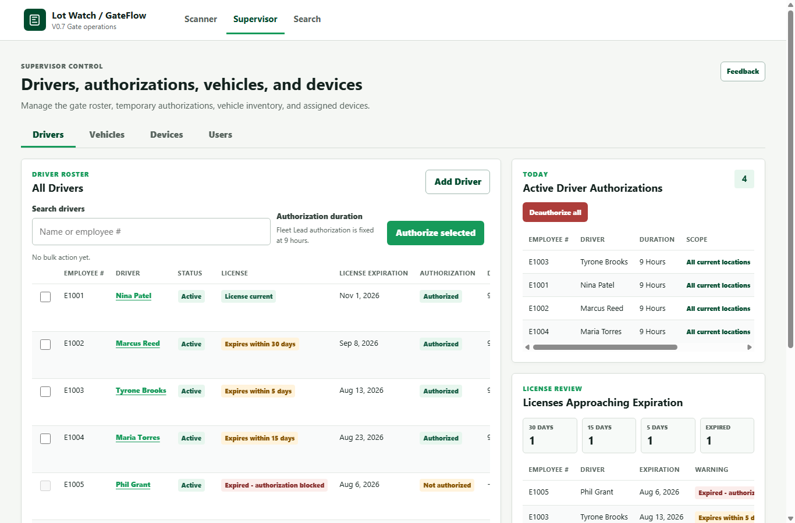
Step 11 of 19
Supervisor: Drivers
Drivers shows the roster, license status, active authorizations, and bulk authorization controls.
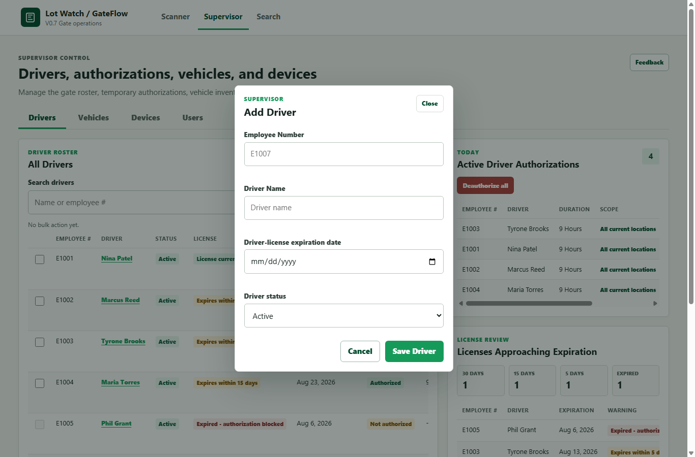
Step 12 of 19
Add/Edit Driver
Driver records include employee number, driver name, license expiration, and active/inactive status.
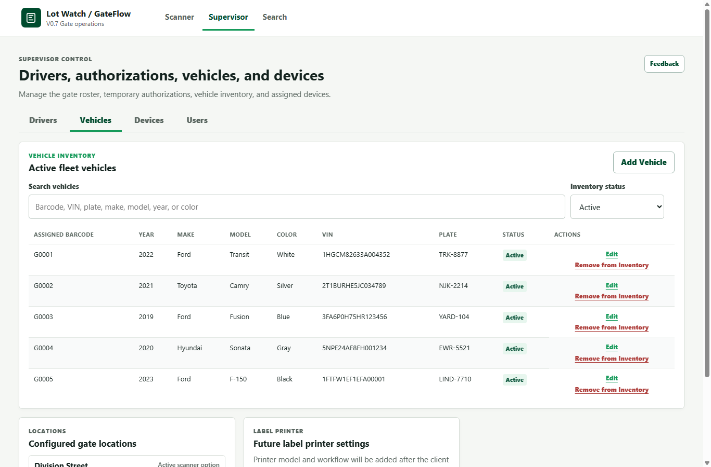
Step 13 of 19
Supervisor: Vehicles
Vehicles supports barcode, VIN, plate, make, model, year, color, and active/inactive inventory review.
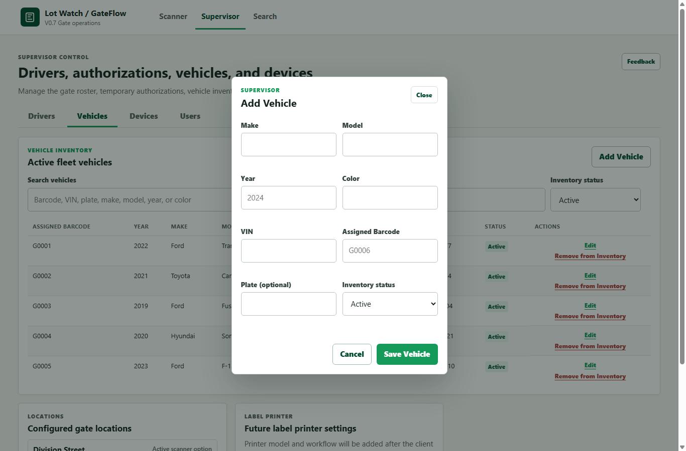
Step 14 of 19
Add/Edit Vehicle
Vehicle records keep the assigned G barcode, VIN, plate, description, and inventory status together.
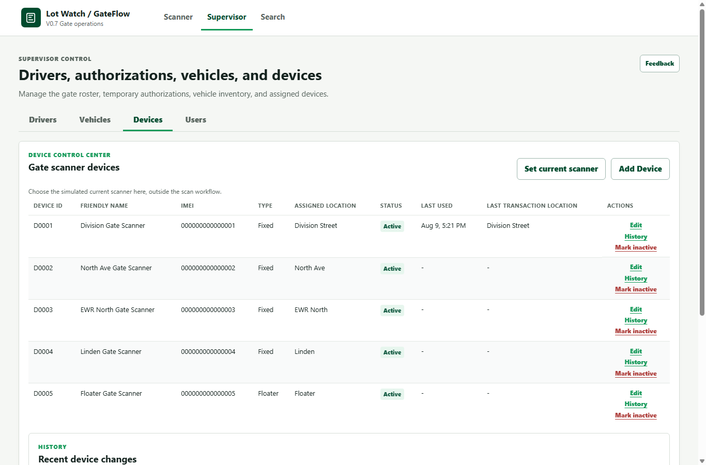
Step 15 of 19
Supervisor: Devices
Device setup is no longer inside the scan path. It lives under Supervisor > Devices.
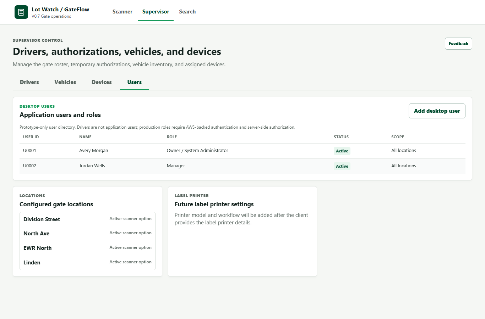
Step 16 of 19
Supervisor: Users
Prototype desktop users are separate from driver records. Real authentication is still a future AWS-backed step.
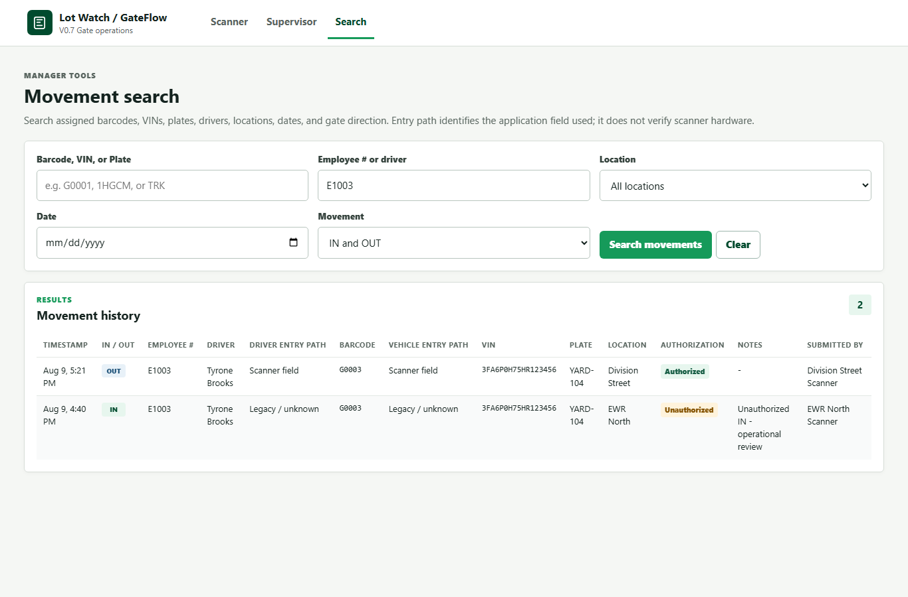
Step 17 of 19
Movement Search
Search filters movement history by barcode, VIN, plate, driver, location, date, and IN or OUT.
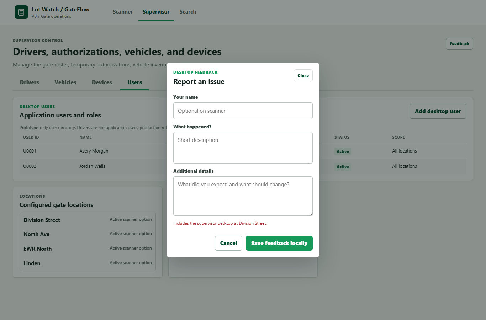
Step 18 of 19
Supervisor Feedback
Supervisor feedback allows a longer local note with context for review.

Step 19 of 19
Prototype Boundaries
V0.7 is ready for review, but production still needs AWS data, real auth, shared devices, printing, and final hardware integration.